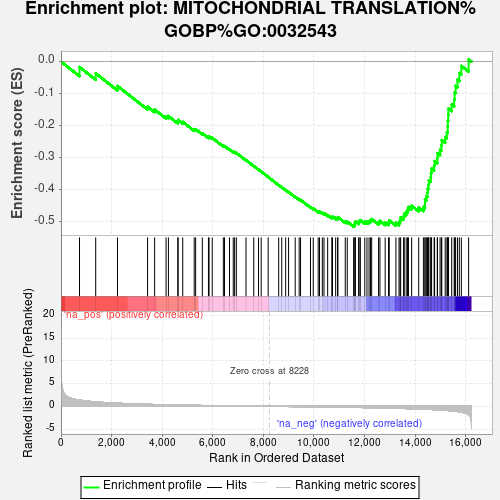
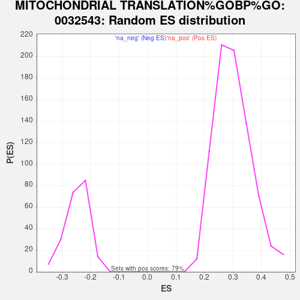

| Dataset | PAL_vs_CTL_ranked |
| Phenotype | NoPhenotypeAvailable |
| Upregulated in class | na_neg |
| GeneSet | MITOCHONDRIAL TRANSLATION%GOBP%GO:0032543 |
| Enrichment Score (ES) | -0.5146469 |
| Normalized Enrichment Score (NES) | -2.0908055 |
| Nominal p-value | 0.0 |
| FDR q-value | 0.0048866416 |
| FWER p-Value | 0.068 |

| SYMBOL | RANK IN GENE LIST | RANK METRIC SCORE | RUNNING ES | CORE ENRICHMENT | |
|---|---|---|---|---|---|
| 1 | MTRF1 | 732 | 1.370 | -0.0169 | No |
| 2 | MRPS27 | 1372 | 0.961 | -0.0366 | No |
| 3 | MRPL42 | 2233 | 0.674 | -0.0759 | No |
| 4 | SARS2 | 3423 | 0.435 | -0.1406 | No |
| 5 | MRPL53 | 3702 | 0.393 | -0.1497 | No |
| 6 | MRPL33 | 4154 | 0.332 | -0.1708 | No |
| 7 | MTRF1L | 4247 | 0.321 | -0.1698 | No |
| 8 | MRPL19 | 4618 | 0.277 | -0.1870 | No |
| 9 | FASTKD2 | 4630 | 0.276 | -0.1820 | No |
| 10 | MRPS30 | 4813 | 0.256 | -0.1879 | No |
| 11 | MRPL49 | 5267 | 0.210 | -0.2117 | No |
| 12 | YARS2 | 5323 | 0.203 | -0.2108 | No |
| 13 | MRPL35 | 5587 | 0.179 | -0.2234 | No |
| 14 | MRPS5 | 5830 | 0.160 | -0.2351 | No |
| 15 | MRPL1 | 5853 | 0.157 | -0.2332 | No |
| 16 | MRPL32 | 5979 | 0.146 | -0.2379 | No |
| 17 | GATC | 6418 | 0.115 | -0.2627 | No |
| 18 | MRPL47 | 6465 | 0.111 | -0.2633 | No |
| 19 | MRPL39 | 6661 | 0.098 | -0.2733 | No |
| 20 | MRPS31 | 6810 | 0.088 | -0.2807 | No |
| 21 | MRPS15 | 6865 | 0.085 | -0.2823 | No |
| 22 | MRPL22 | 6932 | 0.081 | -0.2847 | No |
| 23 | MRPS14 | 7315 | 0.053 | -0.3073 | No |
| 24 | LARS2 | 7620 | 0.034 | -0.3254 | No |
| 25 | MRPL50 | 7808 | 0.023 | -0.3365 | No |
| 26 | DAP3 | 7914 | 0.017 | -0.3427 | No |
| 27 | MRPS35 | 8190 | 0.002 | -0.3597 | No |
| 28 | MRPS17 | 8607 | -0.022 | -0.3851 | No |
| 29 | MRPS24 | 8728 | -0.030 | -0.3919 | No |
| 30 | GARS1 | 8883 | -0.040 | -0.4006 | No |
| 31 | MRPS6 | 8998 | -0.046 | -0.4067 | No |
| 32 | MRPS9 | 9260 | -0.064 | -0.4216 | No |
| 33 | MTIF2 | 9416 | -0.075 | -0.4296 | No |
| 34 | MRPL12 | 9471 | -0.077 | -0.4314 | No |
| 35 | MRPL36 | 9864 | -0.103 | -0.4535 | No |
| 36 | MRPL38 | 9973 | -0.111 | -0.4579 | No |
| 37 | AARS2 | 10168 | -0.125 | -0.4674 | No |
| 38 | MRPL15 | 10221 | -0.129 | -0.4679 | No |
| 39 | MRPL45 | 10332 | -0.137 | -0.4719 | No |
| 40 | GATB | 10398 | -0.142 | -0.4729 | No |
| 41 | MRPS22 | 10543 | -0.154 | -0.4787 | No |
| 42 | GFM2 | 10707 | -0.166 | -0.4853 | No |
| 43 | MRPL44 | 10734 | -0.169 | -0.4834 | No |
| 44 | MTIF3 | 10859 | -0.178 | -0.4874 | No |
| 45 | MRPL4 | 10938 | -0.185 | -0.4884 | No |
| 46 | MRPS10 | 10945 | -0.185 | -0.4849 | No |
| 47 | MRPL27 | 11239 | -0.209 | -0.4988 | No |
| 48 | MRPL13 | 11318 | -0.215 | -0.4991 | No |
| 49 | PTCD3 | 11569 | -0.238 | -0.5097 | Yes |
| 50 | DARS2 | 11621 | -0.243 | -0.5078 | Yes |
| 51 | MRPL58 | 11623 | -0.243 | -0.5028 | Yes |
| 52 | QRSL1 | 11639 | -0.245 | -0.4987 | Yes |
| 53 | MRPL54 | 11767 | -0.256 | -0.5012 | Yes |
| 54 | OXA1L | 11786 | -0.259 | -0.4969 | Yes |
| 55 | MRPS7 | 11836 | -0.263 | -0.4945 | Yes |
| 56 | MRPL11 | 12010 | -0.280 | -0.4994 | Yes |
| 57 | CHCHD1 | 12097 | -0.290 | -0.4987 | Yes |
| 58 | MRPS28 | 12179 | -0.298 | -0.4975 | Yes |
| 59 | MRPL2 | 12237 | -0.303 | -0.4948 | Yes |
| 60 | TARS2 | 12283 | -0.309 | -0.4911 | Yes |
| 61 | MRPS16 | 12555 | -0.343 | -0.5008 | Yes |
| 62 | HARS2 | 12609 | -0.351 | -0.4968 | Yes |
| 63 | MRPL21 | 12817 | -0.376 | -0.5018 | Yes |
| 64 | MRPS25 | 12949 | -0.391 | -0.5018 | Yes |
| 65 | MRPL52 | 12977 | -0.394 | -0.4953 | Yes |
| 66 | MRPL30 | 13241 | -0.432 | -0.5026 | Yes |
| 67 | GFM1 | 13365 | -0.451 | -0.5009 | Yes |
| 68 | MRPS2 | 13406 | -0.458 | -0.4938 | Yes |
| 69 | MRPL23 | 13429 | -0.461 | -0.4856 | Yes |
| 70 | MRPL18 | 13544 | -0.479 | -0.4827 | Yes |
| 71 | MRPL57 | 13570 | -0.482 | -0.4742 | Yes |
| 72 | MRPL48 | 13647 | -0.493 | -0.4687 | Yes |
| 73 | MRPL3 | 13701 | -0.503 | -0.4615 | Yes |
| 74 | MRPS21 | 13737 | -0.511 | -0.4531 | Yes |
| 75 | MRPL46 | 13864 | -0.534 | -0.4498 | Yes |
| 76 | MRPL16 | 14143 | -0.587 | -0.4548 | Yes |
| 77 | IARS2 | 14328 | -0.627 | -0.4532 | Yes |
| 78 | MRPL34 | 14390 | -0.639 | -0.4437 | Yes |
| 79 | WARS2 | 14392 | -0.640 | -0.4305 | Yes |
| 80 | MRPS23 | 14444 | -0.650 | -0.4201 | Yes |
| 81 | MRPL9 | 14485 | -0.662 | -0.4088 | Yes |
| 82 | TSFM | 14500 | -0.663 | -0.3959 | Yes |
| 83 | MRPS18C | 14533 | -0.670 | -0.3840 | Yes |
| 84 | MRPS12 | 14543 | -0.674 | -0.3705 | Yes |
| 85 | MRPS18A | 14619 | -0.693 | -0.3607 | Yes |
| 86 | MRPL14 | 14628 | -0.695 | -0.3468 | Yes |
| 87 | MRPL28 | 14651 | -0.700 | -0.3336 | Yes |
| 88 | MRPL51 | 14752 | -0.731 | -0.3246 | Yes |
| 89 | MRPS33 | 14770 | -0.736 | -0.3104 | Yes |
| 90 | RARS2 | 14877 | -0.767 | -0.3010 | Yes |
| 91 | MRPS18B | 14885 | -0.770 | -0.2854 | Yes |
| 92 | MRPS26 | 14987 | -0.803 | -0.2750 | Yes |
| 93 | MTRFR | 15040 | -0.822 | -0.2611 | Yes |
| 94 | MRPL41 | 15054 | -0.826 | -0.2448 | Yes |
| 95 | MRPS11 | 15191 | -0.877 | -0.2350 | Yes |
| 96 | MRPL17 | 15258 | -0.910 | -0.2202 | Yes |
| 97 | MRPL55 | 15290 | -0.923 | -0.2029 | Yes |
| 98 | MRPS34 | 15294 | -0.924 | -0.1839 | Yes |
| 99 | GADD45GIP1 | 15310 | -0.931 | -0.1654 | Yes |
| 100 | AURKAIP1 | 15318 | -0.934 | -0.1465 | Yes |
| 101 | TUFM | 15447 | -0.999 | -0.1336 | Yes |
| 102 | MRPL40 | 15545 | -1.058 | -0.1176 | Yes |
| 103 | MRPL43 | 15564 | -1.070 | -0.0965 | Yes |
| 104 | MRPL20 | 15601 | -1.102 | -0.0758 | Yes |
| 105 | MRPL37 | 15676 | -1.154 | -0.0564 | Yes |
| 106 | EARS2 | 15749 | -1.216 | -0.0356 | Yes |
| 107 | MRPL24 | 15828 | -1.300 | -0.0134 | Yes |
| 108 | MRPL10 | 16116 | -1.839 | 0.0070 | Yes |
